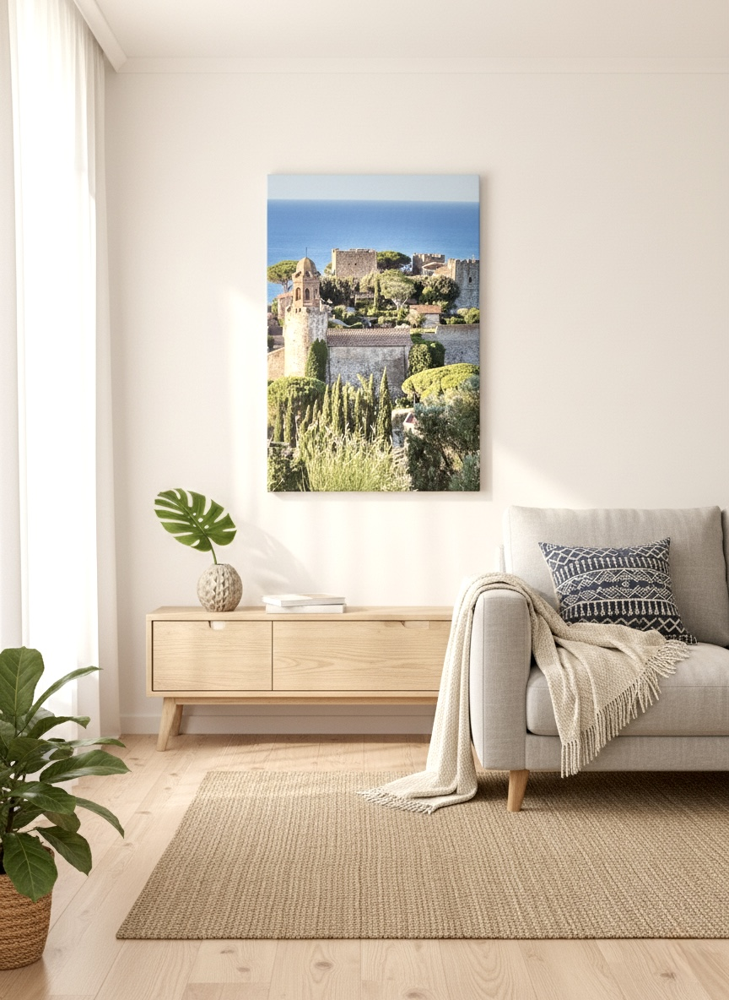

Seleziona uno dei 6 formati: 4 verticali (60×40) e 2 orizzontali (40×60).

Dimensioni reali:—
Suggerimento: spostati davanti a una parete libera. L’AR posizionerà il quadro alla scala corretta (60×40 o 40×60 cm).